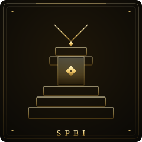

SPBI: El Movimiento de Base
"El pueblo ha hablado. Quieren IA."
La adopción de IA se está esparciendo orgánicamente por tu organización, impulsada por usuarios de negocio que ven el valor. Múltiples equipos han integrado IA en sus flujos, frecuentemente con diferentes herramientas. Ahora necesitas canalizar esta energía en una estrategia coherente sin matar el entusiasmo.
✓ Tus Fortalezas
- Demanda probada de usuarios de negocio
- Integración real en múltiples áreas
- Champions por toda la organización
- Desarrollo de casos de uso business-driven
- Baja resistencia a adopción de IA
✗ Tus Puntos Ciegos
- Sprawl de herramientas y redundancia
- Prácticas y políticas inconsistentes
- Desafíos de integración entre herramientas
- Conocimiento en silos por equipos
- Gobernanza rezagada vs. adopción
Artefactos que Necesitas Construir
Como Movimiento de Base, tu trabajo es canalizar energía orgánica en estructura sostenible. Estos artefactos te ayudan a coordinar sin aplastar la innovación.
Hoja de Ruta de 90 Días
Tu objetivo es formalizar el éxito sin matar el entusiasmo que te trajo hasta aquí.
Mapear el Movimiento
Días 1-30Entender el alcance completo de la adopción orgánica.
Tareas Clave
Conectar y Consolidar
Días 31-60Vincular esfuerzos aislados y reducir redundancia.
Tareas Clave
Escalar y Sostener
Días 61-90Construir infraestructura sostenible para crecimiento.
Tareas Clave
¿Listo para Escalar tu Movimiento?
El AI Strategy Sprint te ayuda a consolidar y escalar en solo 2 semanas.